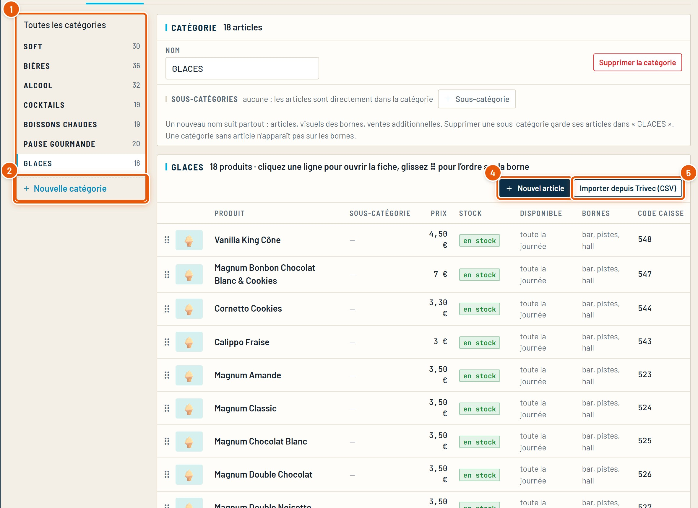
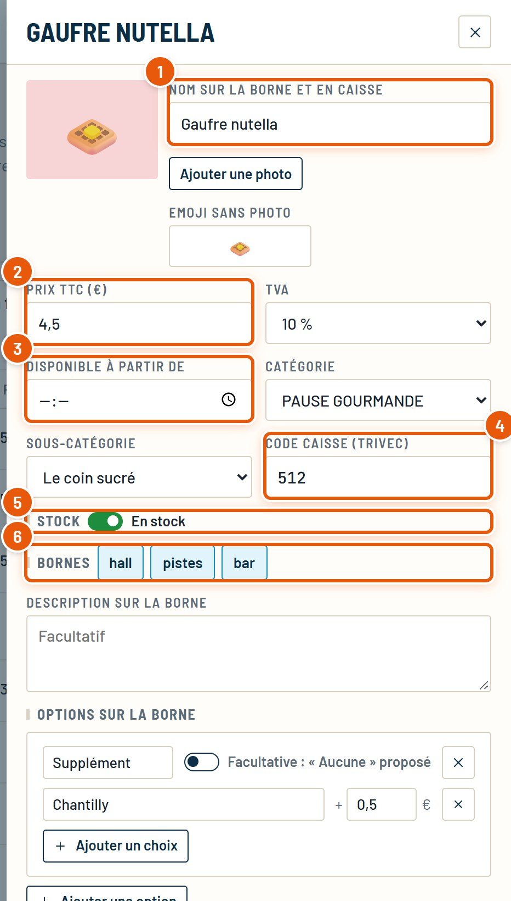
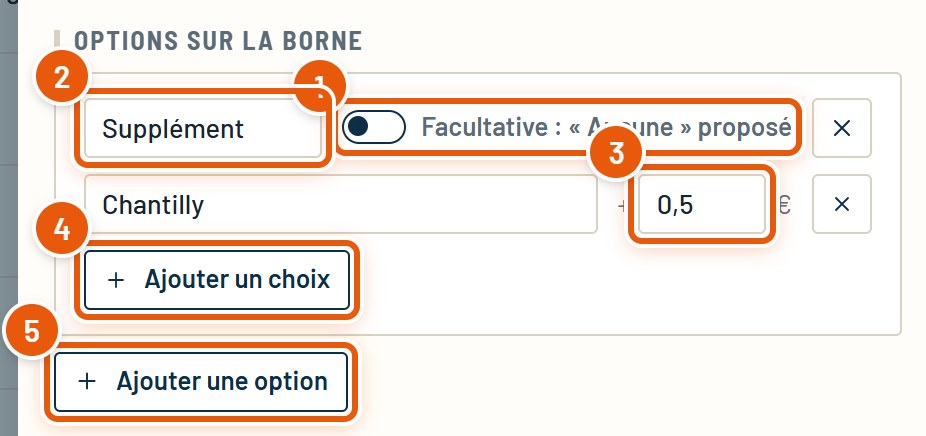
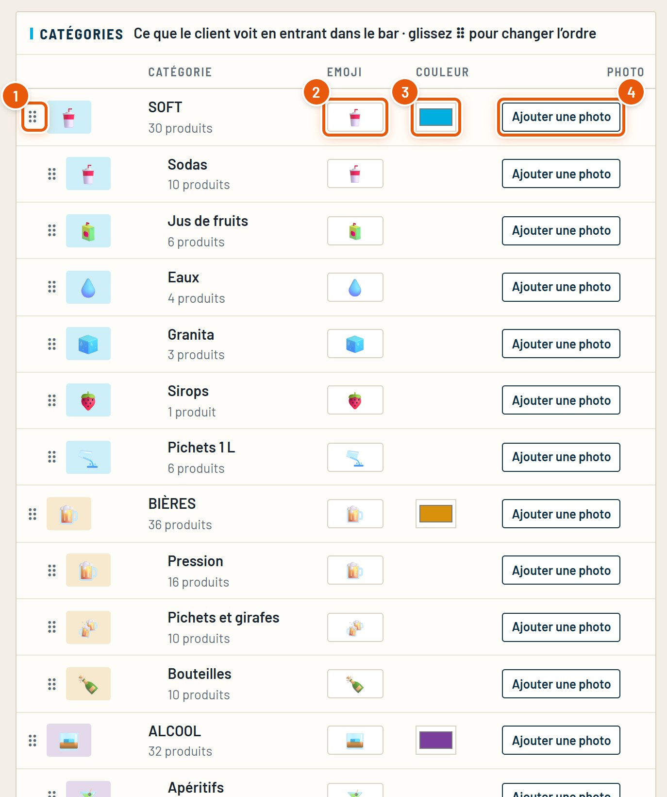
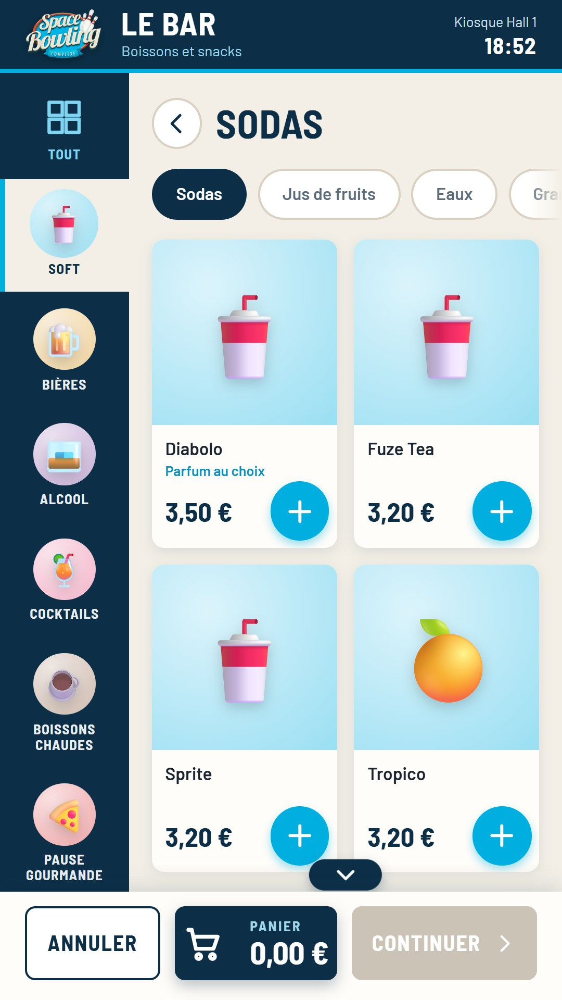
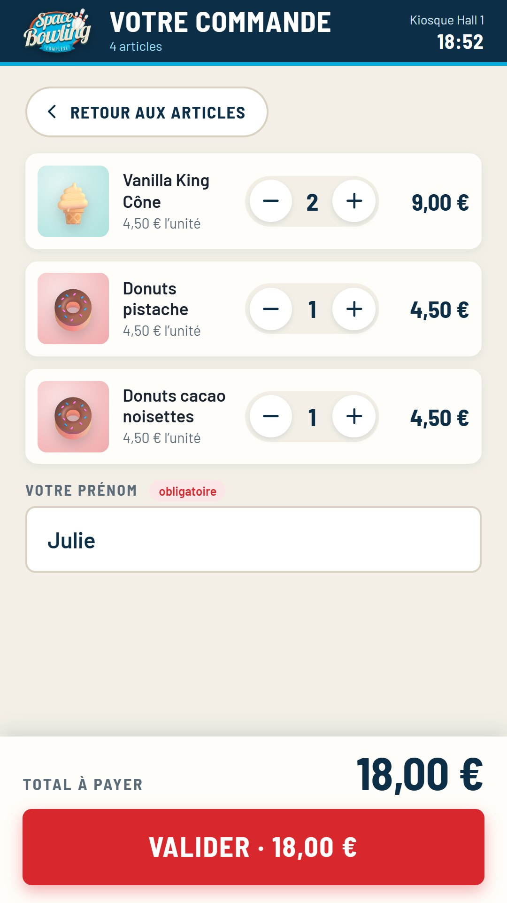
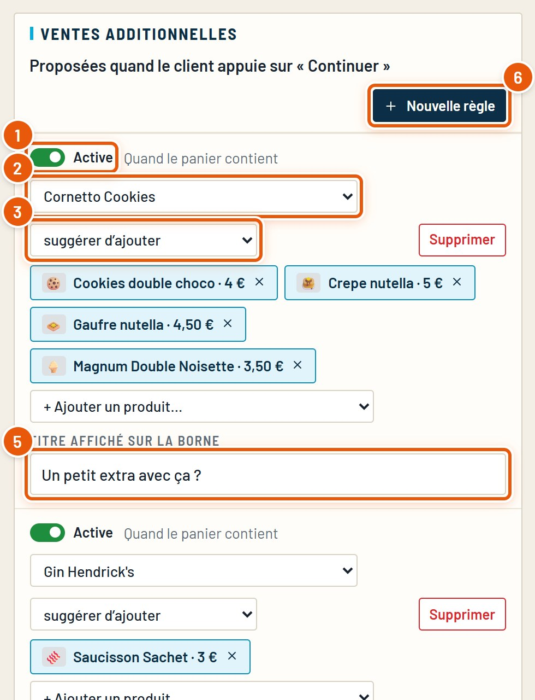
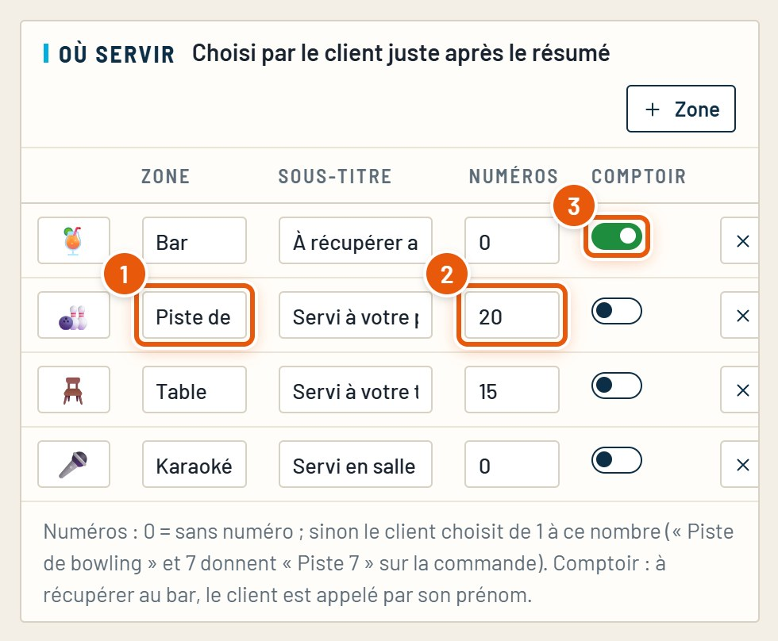
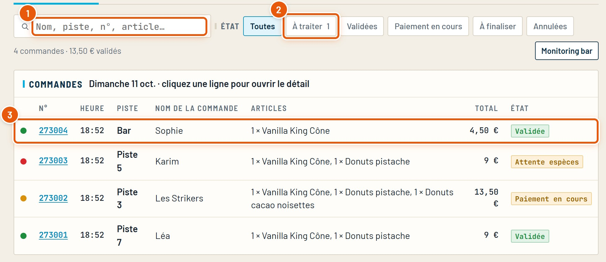
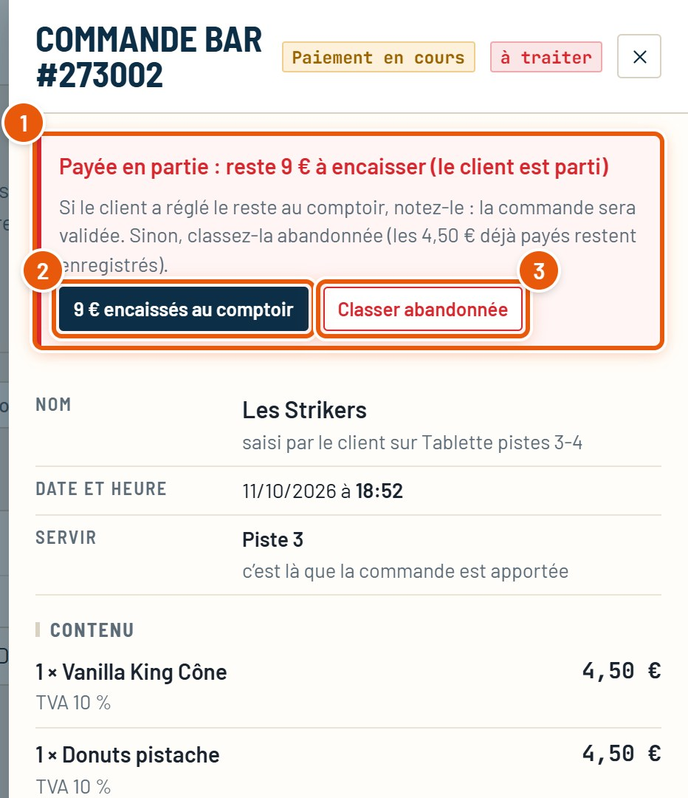

Guide détaillé
Le bar
La carte (catégories, articles, options, allergènes), l’import depuis la caisse Trivec, ce que voit le client sur les bornes et le téléphone, et le suivi des commandes.
Octobre 2026SpaceBowling Engine
Guide détaillé
La carte (catégories, articles, options, allergènes), l’import depuis la caisse Trivec, ce que voit le client sur les bornes et le téléphone, et le suivi des commandes.
Le bar se vend sur les bornes, les tablettes des pistes et le téléphone des clients. Les commandes payées partent directement sur la caisse Trivec du bar ; le CRM les garde en liste, avec le nom donné par le client et l’endroit où servir.
Ce qu’il faut regarder est entouré en orange et numéroté.
Menu Centre › Bar › onglet Produits. Les catégories à gauche, leurs articles à droite.

Renommer une catégorie ou une sous-catégorie (dans le cadre au-dessus de la liste) met à jour ses articles, ses visuels et ses ventes additionnelles. Une catégorie qui contient encore des articles ne peut pas être supprimée.
Un clic sur un article ouvre sa fiche à droite. Tout ce qui est modifié part aussitôt sur les bornes.

Plus bas dans la fiche : une description pour la borne (facultative), les options (chapitre 3), les allergènes (affichés sur la borne) et la case alcool (le client confirme alors qu’il a plus de 18 ans).
« Retirer de la carte », en bas de la fiche, supprime l’article (deux clics pour confirmer). Pour une rupture passagère, préférez « hors stock ».
Un parfum, une cuisson, un supplément : le client les choisit sur la borne avant d’ajouter l’article au panier.

Pour ne pas tout ressaisir : la carte se reprend depuis les exports de la caisse.
Réimporter met à jour les articles existants (même code caisse) sans effacer vos photos ni vos réglages de borne.
Bar › onglet Sur les bornes. Les catégories sont la première chose que le client voit en entrant dans le bar.



Quand le client appuie sur « Continuer », la borne peut proposer un article en plus, ou une version plus grande. Même onglet, bloc Ventes additionnelles.

Après le panier, la borne demande « Où êtes-vous ? ». Les zones se règlent dans le bloc Où servir, du même onglet.

Sur une tablette de piste, la zone « Piste » et son numéro sont déjà choisis. Sur le téléphone (QR code d’une piste), aussi.
Bar › onglet Commandes. Les commandes des bornes, des tablettes et des téléphones, en direct.

Une commande payée en partie dont le client est parti, un paiement jamais terminé : l’accueil décide quoi en faire.

Une commande « Attente espèces » se règle d’elle-même : soit le client la paie sur une grande borne, soit elle est annulée au bout de 10 minutes. Rien à faire.
Les textes et l’apparence des pages du bar se règlent comme pour toute activité : Sandbox › Activités du centre › Bar › bloc Module borne.
| Page | Ce qu’on y règle |
|---|---|
| Accueil | Le nom, le sous-titre et la photo de la tuile. |
| Carte, Panier | Le style de la page (disposition des articles). |
| Paiement | « Payer une partie » proposé ou non (sinon carte ou espèces tout de suite). |
| Fin | Le grand mot (« Strike ! »), le bouton, le temps avant le retour à l’accueil. |
| Espèces au comptoir | Le message de l’écran affiché par une tablette sans monnayeur, et le délai avant annulation (10 minutes). |
Le détail des bornes (monnayeur, téléphone, hors ligne) est dans le guide Les bornes.
Les cas les plus courants, et où regarder.
| Ce que vous voyez | À vérifier |
|---|---|
| Un article n’apparaît pas sur une borne | Il est en stock ; l’espace de la borne est coché (hall, pistes, bar) ; son heure « disponible à partir de » est passée ; sa catégorie a au moins un article. |
| Une commande payée n’arrive pas en caisse | Le code caisse de chaque article (fiche de l’article). L’onglet Caisse Trivec montre les derniers échanges. |
| Le client ne peut pas valider son panier | Une option obligatoire n’est pas choisie, ou l’article contient de l’alcool (case « plus de 18 ans »). |
| Une vente additionnelle ne s’affiche pas | La règle est active ; l’article proposé est en stock et vendu dans cet espace. |
| Une commande reste « Paiement en cours » | Le client est parti : voir les commandes à traiter (chapitre 9). |
Tous les guides du CRM, refaits à partir du vrai logiciel. Ils se trouvent dans le dossier docs.